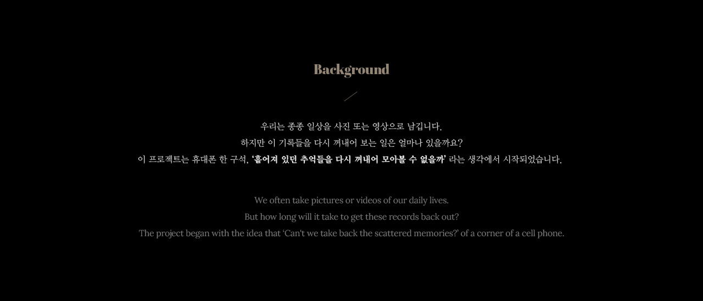
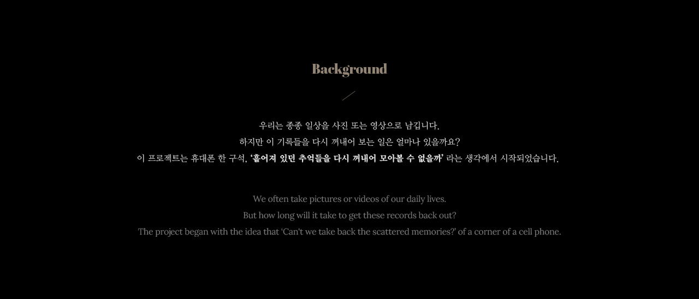
 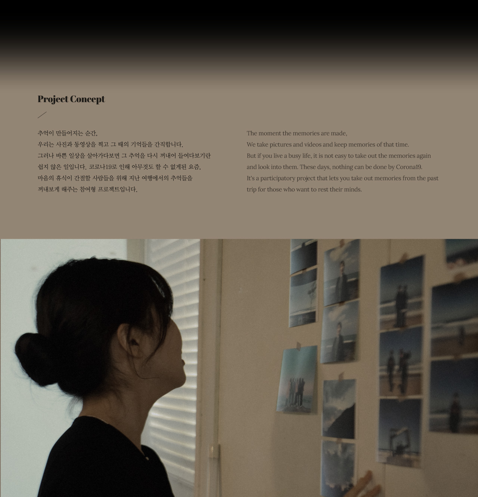
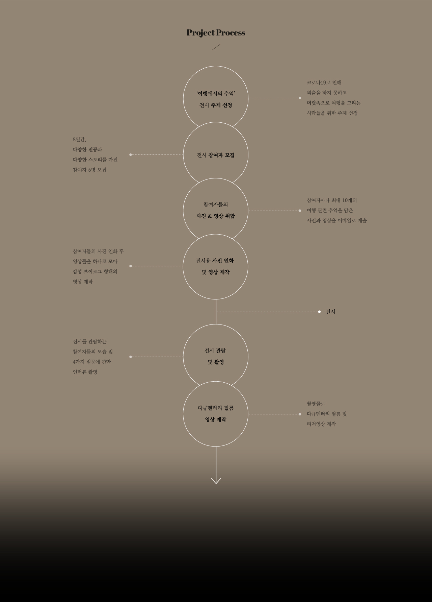
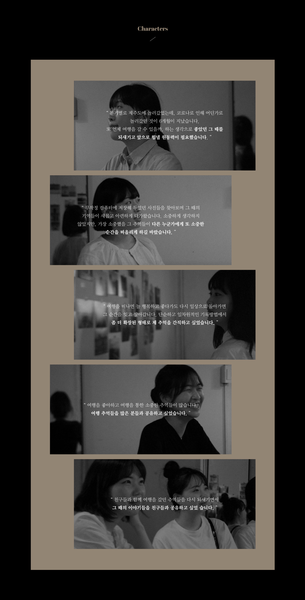
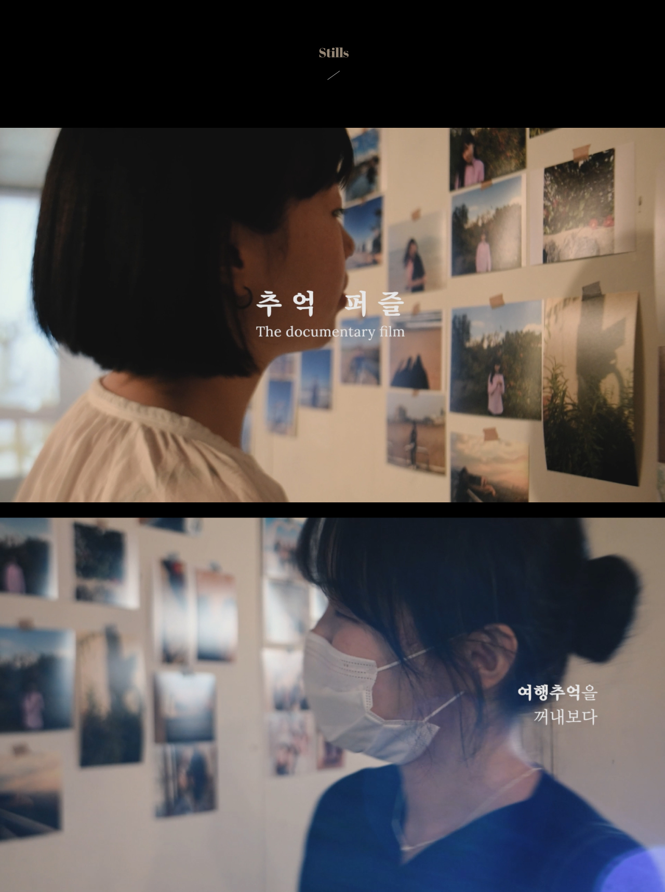
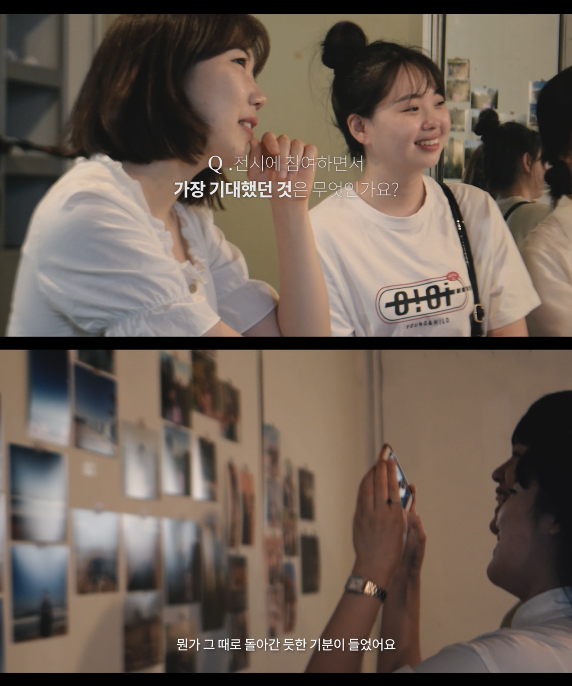
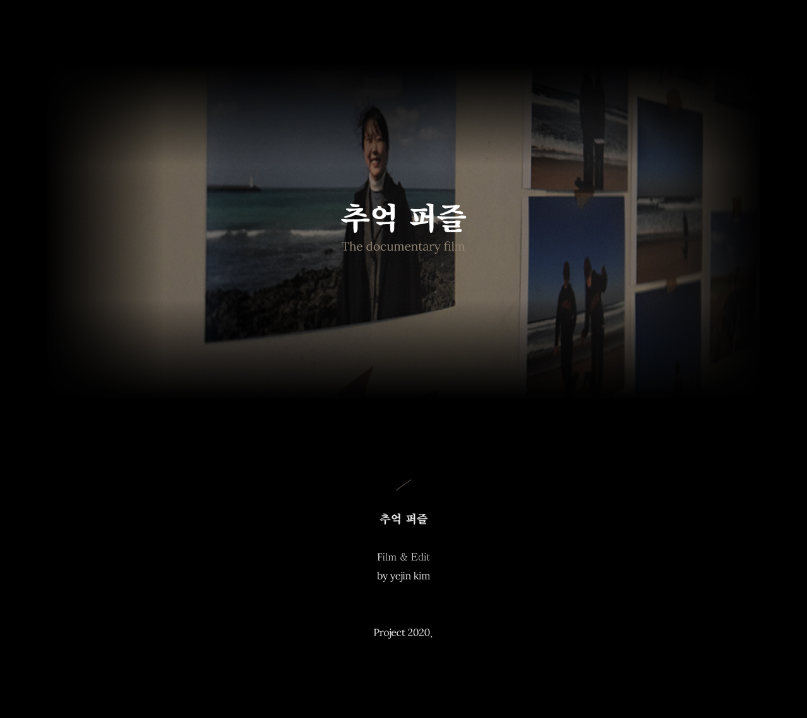
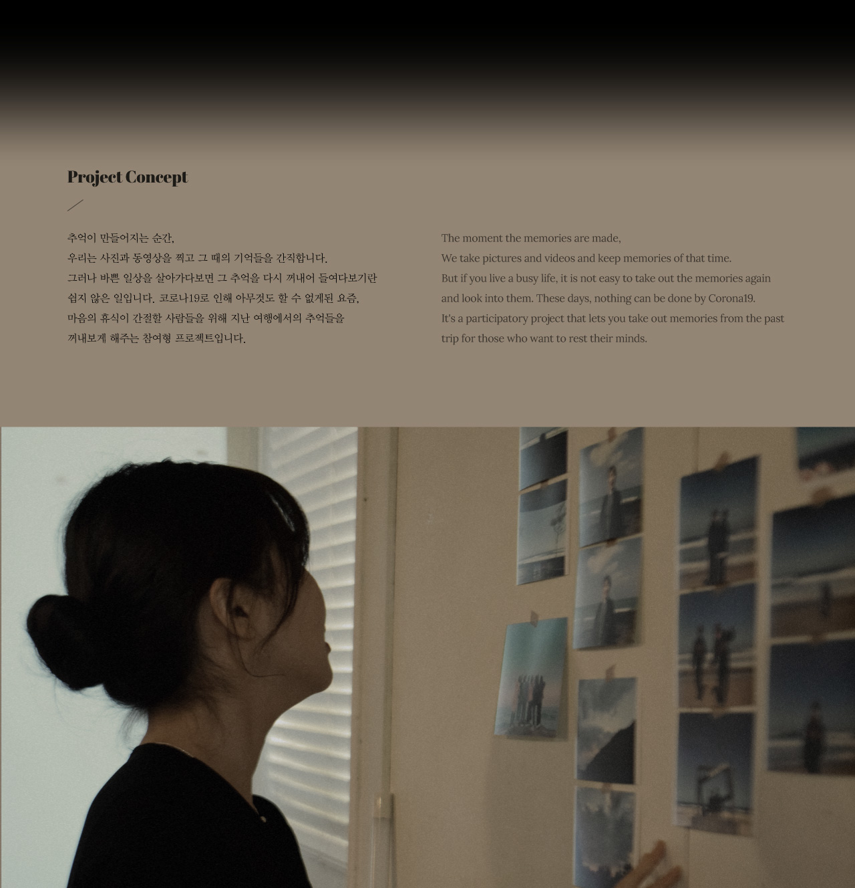
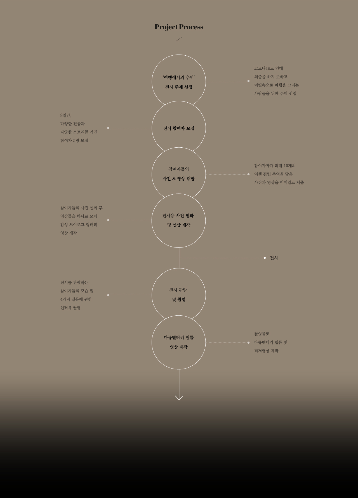
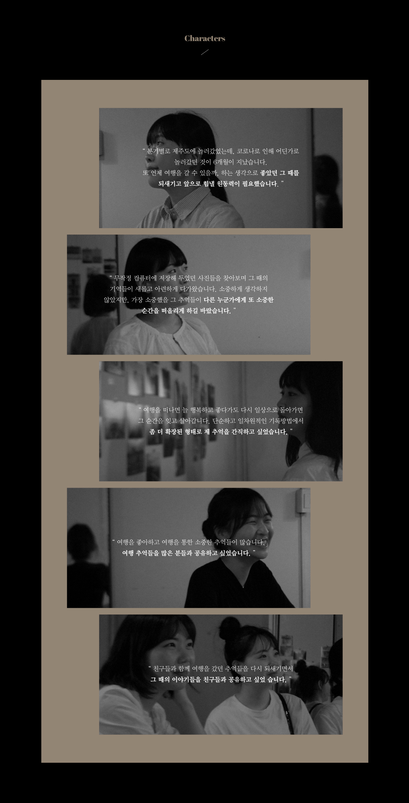
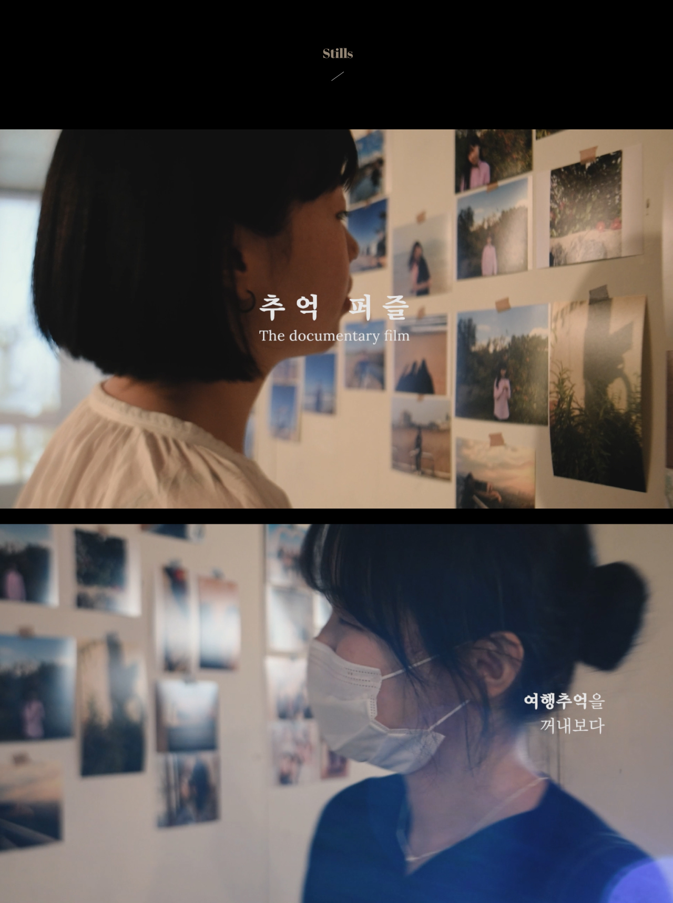
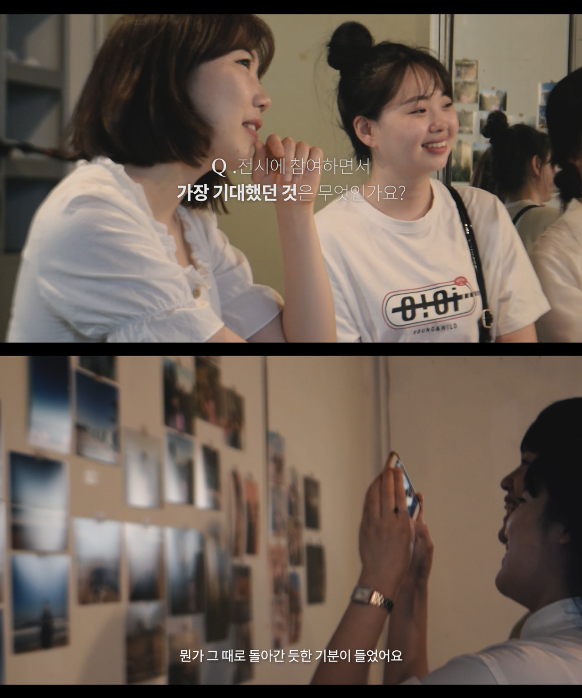
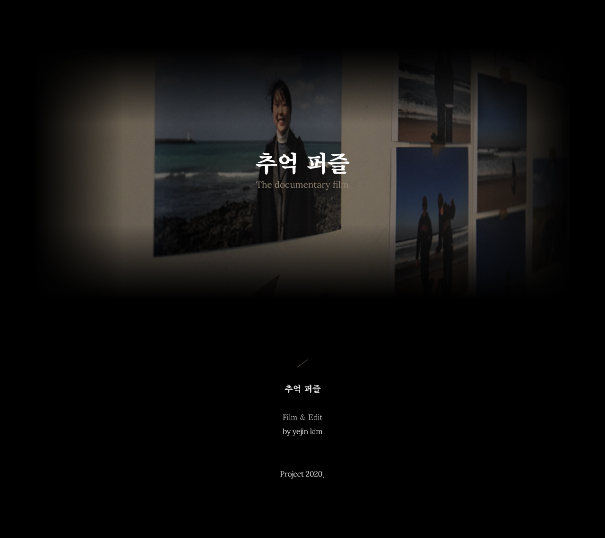
추억퍼즐
김예진
https://nj2936.myportfolio.com/
우리는 순간의 경험들을 사진이나 영상으로 남깁니다. 하지만 이것들은 곧 휴대폰 앨범 속에 쌓이고 쌓여 잊혀지고 말죠. 이 프로젝트는 각기 다른 다섯명의 참여자가 과거의 행복했던 추억들을 다시금 되새기는 전시를 다룬 다큐멘터리 필름입니다. 추억퍼즐은 퍼즐처럼 흩어져있던 과거 기억들을 조합한다는 의미를 담고 있습니다.
We take pictures or videos of the moment's experiences. But they soon pile up in cell phone albums and get forgotten. This project is a documentary film about five different participants who relive happy memories of the past. Memories Puzzle is a combination of past memories that have been scattered like puzzles.